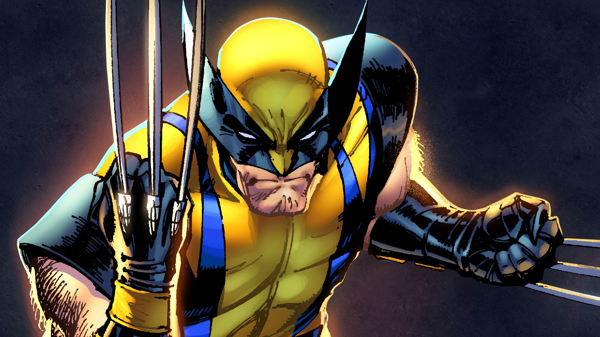

Batman

Batman[a] is a superhero appearing in American comic books published by DC Comics. The character was created by artist Bob Kane and writer Bill Finger, and debuted in the 27th issue of the comic book Detective Comics on March 30, 1939. In the DC Universe continuity, Batman is the alias of Bruce Wayne, a wealthy American playboy, philanthropist, and industrialist who resides in Gotham City. Batman's origin story features him swearing vengeance against criminals after witnessing the murder of his parents Thomas and Martha as a child, a vendetta tempered with the ideal of justice. He trains himself physically and intellectually, crafts a bat-inspired persona, and monitors the Gotham streets at night. Kane, Finger, and other creators accompanied Batman with supporting characters, including his sidekicks Robin and Batgirl; allies Alfred Pennyworth, James Gordon, and Catwoman; and foes such as the Penguin, the Riddler, Two-Face, and his archenemy, the Joker.
Iron man
ron Man is a 2008 American superhero film based on the Marvel Comics character of the same name. Produced by Marvel Studios and distributed by Paramount Pictures, it is the first film in the Marvel Cinematic Universe. Directed by Jon Favreau from a screenplay by the writing teams of Mark Fergus and Hawk Ostby, and Art Marcum and Matt Holloway, the film stars Robert Downey Jr. as Tony Stark / Iron Man alongside Terrence Howard, Jeff Bridges, Gwyneth Paltrow, Leslie Bibb, and Shaun Toub.
Hulk
The Hulk is a superhero appearing in American comic books published by Marvel Comics. Created by writer Stan Lee and artist Jack Kirby, the character first appeared in the debut issue of The Incredible Hulk (May 1962). In his comic book appearances, the character, who has dissociative identity disorder (DID), is primarily represented by the alter ego Hulk, a green-skinned, hulking and muscular humanoid possessing a limitless degree of physical strength, and the alter ego Dr. Robert Bruce Banner, a physically weak, socially withdrawn, and emotionally reserved physicist, both of whom typically resent each other.
Spiderman
Spider-Man is a superhero appearing in American comic books published by Marvel Comics. Created by writer-editor Stan Lee and artist Steve Ditko, he first appeared in the anthology comic book Amazing Fantasy #15 (July 31st 1962) in the Silver Age of Comic Books. He has been featured in comic books, television shows, films, video games, novels, and plays
Deathpool
Deadpool is a 2016 American superhero film based on the Marvel Comics character of the same name. Distributed by 20th Century Fox, it is a spin-off of the X-Men film series and its eighth installment overall. Directed by Tim Miller and written by Rhett Reese and Paul Wernick, it stars Ryan Reynolds in the title role alongside Morena Baccarin, Ed Skrein, T. J. Miller, Gina Carano, and Brianna Hildebrand. In the film, Wade Wilson hunts the man who gave him mutant abilities and a scarred physical appearance, becoming the antihero Deadpool
Black panther
>Black Panther is a 2018 American superhero film based on the Marvel Comics character of the same name. Produced by Marvel Studios and distributed by Walt Disney Studios Motion Pictures, it is the 18th film in the Marvel Cinematic Universe (MCU). The film was directed by Ryan Coogler, who co-wrote the screenplay with Joe Robert Cole, and it stars Chadwick Boseman as T'Challa / Black Panther alongside Michael B. Jordan, Lupita Nyong'o, Danai Gurira, Martin Freeman, Daniel Kaluuya, Letitia Wright, Winston Duke, Sterling K. Brown, Angela Bassett, Forest Whitaker, and Andy Serkis.>
Captain America
Captain America is a superhero created by Joe Simon and Jack Kirby who appears in American comic books published by Marvel Comics. The character first appeared in Captain America Comics #1, published on December 20, 1940, by Timely Comics, a corporate predecessor to Marvel. Captain America's civilian identity is Steve Rogers, a frail man enhanced to the peak of human physical perfection by an experimental "super-soldier serum" after joining the United States Army to aid the country's efforts in World War II.
Flash

The Flash is a 2023 American superhero film based on the DC Comics character of the same name. Produced by Warner Bros. Pictures, DC Studios, Double Dream, and the Disco Factory, it is the 13th film in the DC Extended Universe (DCEU). Directed by Andy Muschietti from a screenplay by Christina Hodson and a story by Joby Harold and the writing team of John Francis Daley and Jonathan Goldstein, the film stars Ezra Miller as Barry Allen / The Flash, who travels back in time to prevent his mother's death and becomes stranded in an alternate past. Sasha Calle also stars in her film debut, alongside Michael Shannon, Ron Livingston, Maribel Verdú, Kiersey Clemons, Antje Traue, and Michael Ke
miles morales

Spider-Man (Miles Morales) is a superhero and the second predominant Spider-Man to appear in American comic books published by Marvel Comics, created in 2011 by writer Brian Michael Bendis and artist Sara Pichelli, along with input by Marvel's then-editor-in-chief Axel Alonso. Born as a modern reimagining of the popular character, Miles Morales debuted in Ultimate Comics: Fallout #4. Originally from the alternate Ultimate Marvel Universe Earth-1610 before being retconned to the main Marvel Universe Earth-616, he was bitten by a model spider that was specially and genetically engineered by Oscorp Industries biochemist, Dr.
Wolverine
Wolverine (birth name: James Howlett;[1] alias: Logan and Weapon X) is a superhero appearing in American comic books published by Marvel Comics, often in association with the X-Men. He is a mutant with animal-keen senses, enhanced physical capabilities, a powerful regenerative ability known as a healing factor, a skeleton reinforced with the unbreakable fictional metal adamantium, and three retractable claws in each hand. In addition to the X-Men, Wolverine has been depicted as a member of X-Force, Alpha Flight, the Fantastic Four, and the Avengers. The common depiction of Wolverine is multifaceted; he is portrayed at once as a gruff loner, susceptible to animalistic “berserker rages” despite his best efforts, while simultaneously being an incredibly knowledgeable and intelligent polyglot, strategist, and martial artist, partially due to his extended lifespan and expansive lived experiences
Thor
Thor is a 2011 American superhero film based on the Marvel Comics character of the same name. Produced by Marvel Studios and distributed by Paramount Pictures,[a] it is the fourth film in the Marvel Cinematic Universe (MCU). It was directed by Kenneth Branagh, written by the writing team of Ashley Edward Miller and Zack Stentz along with Don Payne, and stars Chris Hemsworth as the title character alongside Natalie Portman, Tom Hiddleston, Stellan Skarsgård, Kat Dennings, Clark Gregg, Colm Feore, Ray Stevenson, Idris Elba, Jaimie Alexander, Rene Russo, and Anthony Hopkins. After reigniting a dormant war, Thor is banished from Asgard to Earth, stripped of his powers and his hammer Mjölnir. As his brother Loki (Hiddleston) plots to take the Asgardian throne, Thor must prove himself worthy.
Falcon
The Falcon (Samuel Thomas "Sam" Wilson) is a superhero appearing in American comic books published by Marvel Comics. The character was introduced by writer-editor Stan Lee and artist Gene Colan in Captain America #117 (Sept. 1969), and was the first Black American superhero in mainstream comic books.[1][2] Samuel Wilson, or known as his superhero alias Falcon, uses mechanical wings to fly, defend, and attack. He also has limited telepathic and empathic control over birds. After Steve Rogers retires, Wilson becomes Captain America in All-New Captain America #1 (Jan. 2015) and leader of the Avengers. Wilson's deceased nephew was the Incredible Hulk's sometime-sidekick Jim Wilson, one of the first openly HIV-positive comic-book characters